Last reviewed: 31 Oct 2026.
Contents
- What PaiYo is
- Getting started
- The seven screens
- How PaiYo reads your alerts
- Getting your data out: Excel, Google Sheet, backups
- Privacy and security
- FAQs
1. What PaiYo is
PaiYo is an Android app that reads the alerts your bank, credit card and UPI app already send you, by SMS and (if you turn it on) by email, and turns them into a spending log you never have to type into. From that log it gives you:
- Transactions grouped by day and month, each with a merchant name and a category you can correct once and have applied everywhere.
- Accounts: every bank account, card, loan, deposit, mutual fund and NPS it sees or you add, with balances that follow your transactions, and a net position.
- Budgets per category with an overall cap, running on budget months that start on your salary day.
- Bills and subscriptions that tick themselves off when the payment alert arrives, with reminders.
- Home dashboard: net worth, this month's figures, 12-month trends and where the money went.
- Summary by category, payment method and top merchants.
- Excel export, an optional live Google Sheet, and encrypted backups to your own Google Drive.
Everything is worked out on the phone. There is no PaiYo server, no PaiYo account, no ads and no analytics. The only things that ever leave the phone are what you switch on yourself: reading your own Gmail, backups to your own Drive, and rows written to your own Sheet. Alerts are read with the phone's SMS permission; personal SMS are ignored and one-time passwords are never stored.
PaiYo is built for Indian banking: ₹ amounts, lakh grouping, UPI, RuPay, RD/FD, AMFI mutual-fund NAVs, NPS, CAMS/KFintech statements, and salary-day budget months with Delhi gazetted holidays built in.
2. Getting started
Installing
PaiYo is in closed testing on Google Play. Send the Gmail address you use on Play to app.paiyo@thevoltdesk.in and you'll get an opt-in link: open it, tap Become a tester, then install PaiYo from the Play Store. Updates arrive through Play. Please stay opted in for at least 14 days; Google counts testers who do.
Moving from the earlier Firebase test build? The Play version is signed differently, so it can't install over it. Back up first (Settings → Google Drive backup → Back up now), uninstall the old PaiYo, install from Play, then tap Restore backup on the first screen.
First run
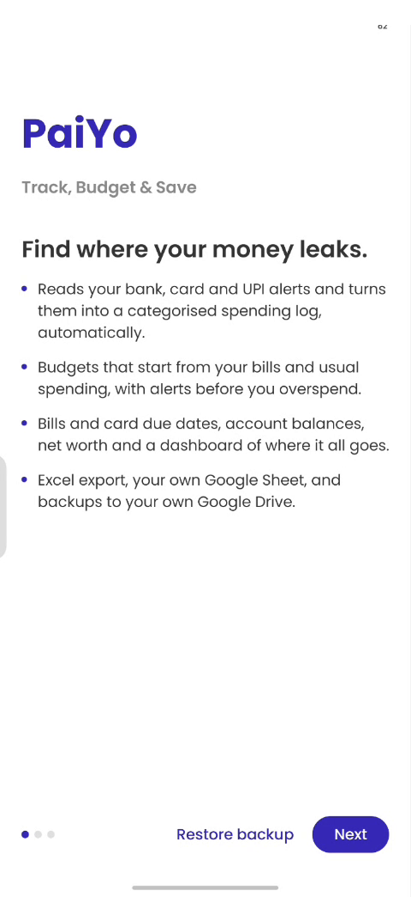
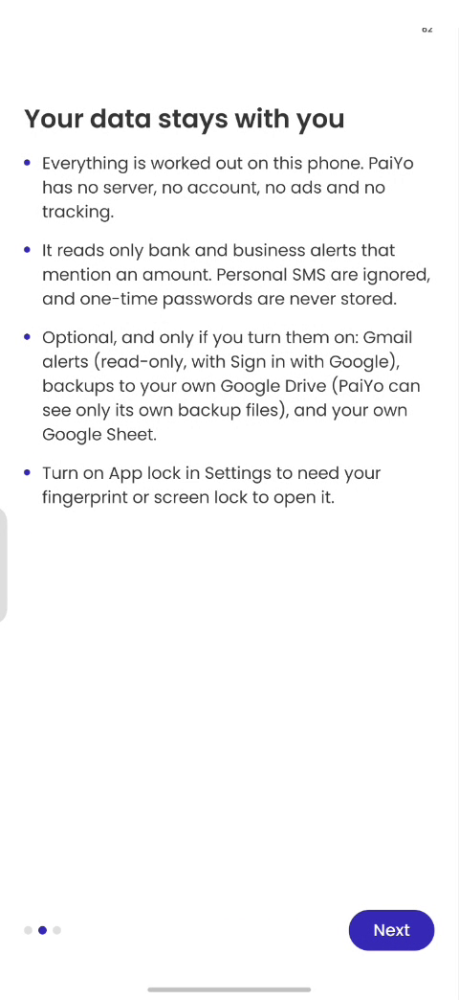
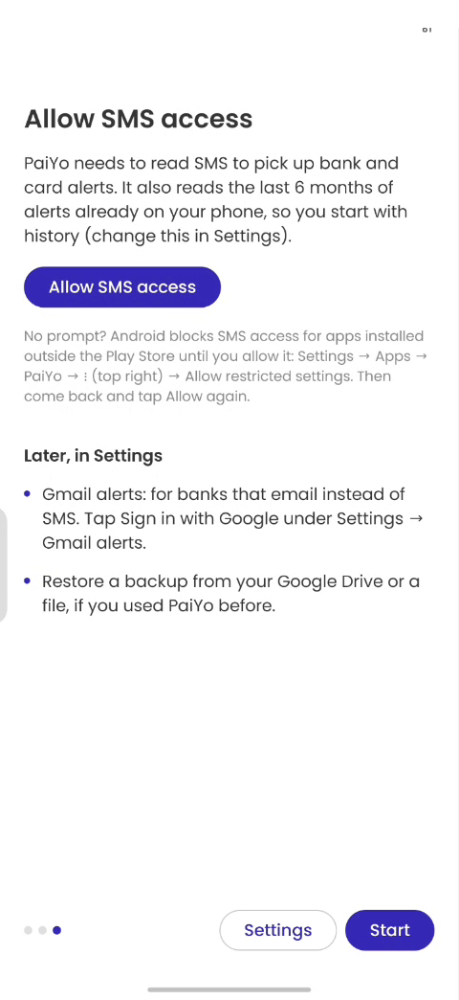
PaiYo opens with four short screens:
- Welcome — what the app does.
- Your data stays with you — the privacy summary (see section 6).
- Allow SMS access — tap Allow. PaiYo then reads the last 6 months of alerts already on the phone, so you start with history (change the window later under Settings → SMS alerts). New bank SMS are read the moment they arrive.
- No prompt appears? (only for a copy installed outside the Play Store) Android blocks SMS access for those until you allow it: Settings → Apps → PaiYo → ⋮ (top right) → Allow restricted settings, then come back and tap Allow again.
- You can skip this with Later, in Settings and allow it from Settings → SMS alerts.
- Start — with a Restore backup shortcut if you used PaiYo before: it restores from your Google Drive or a backup file.
After that PaiYo shows Reading your SMS and email alerts… and lands on Home.
Moving to a new phone or a new build
PaiYo doesn't move data by itself. On the old phone or build: Settings → Google Drive backup → Back up now. On the new one, tap Restore backup on the first screen (or Settings → Google Drive backup → Restore…), connect the same Google Drive, pick the backup and enter your backup passphrase. Check your transactions are there before uninstalling the old one. Backups live in a PaiYo backups folder in your Drive.
Moving around
A floating dock bar along the bottom holds all seven screens: Home, Transactions, Accounts, Budget, Bills, Summary, Settings. Tap an icon, or swipe left or right anywhere on a page to move to the next one. Sliding a finger along the bar magnifies the icon under it, Dock-style (off when the phone's Remove animations setting is on). On narrow phones or large display sizes the bar scrolls sideways.
The header on most screens has ⟳ Sync now (reads new SMS and email, refreshes prices, pushes the Sheet) and a share icon that exports the Excel file.
3. The seven screens
Home
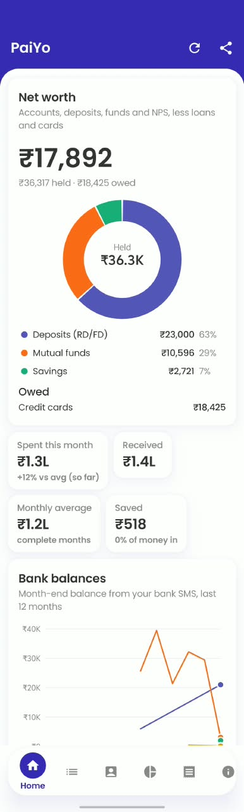
The dashboard. Each chart has a legend with values; tap columns and slices, drag across line charts to read values. Colours follow a fixed, colour-blind-checked order.
| Block | What it shows |
|---|---|
| Net position | Hero figure: accounts, deposits, funds and NPS, less loans and cards, with a donut of where it sits and what's owed. Counts only accounts with a known figure. |
| This month tiles | Spent, received, monthly average, saved. Spending leaves out credit-card bill payments and self transfers. |
| Bank balances | Month-end balance from your bank SMS, last 12 months (line). Appears once SMS with "Avl Bal" arrive, or once you add funds/NPS. |
| Spending per month | Columns for the last 12 budget months, the current month so far highlighted, with the monthly average. Tap a column. |
| Where it went this month | Donut by head (Food, Beverages and Groceries; Travel & Transport; …, top 5 + Other), and a donut by mode of payment: tap a slice for its categories. |
| Monthly average by category | Bars of the average over the last complete months, with this month's tick on each. |
| This month vs last | Running total of spending by day of the budget month, against your budget. Drag to compare. |
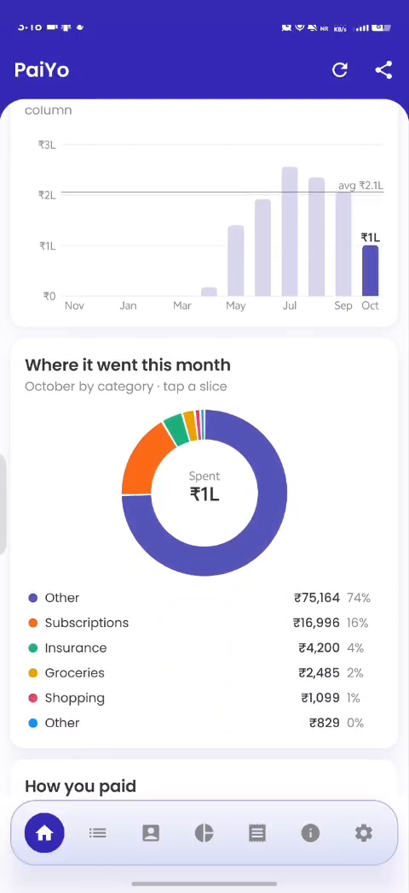
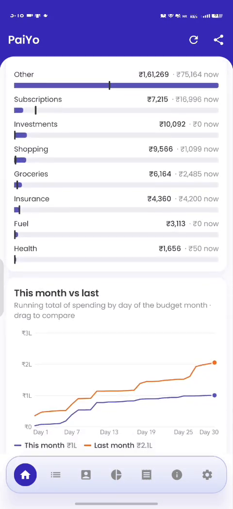
Transactions
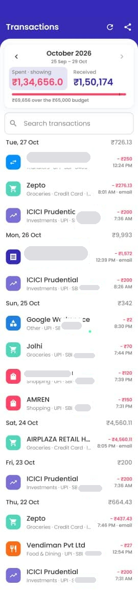
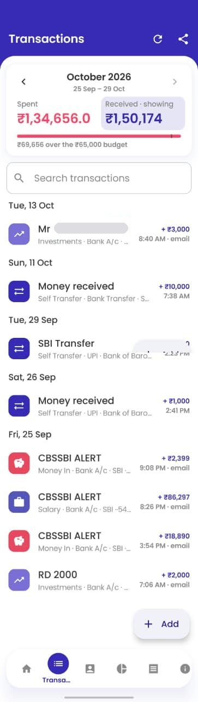
The month view. At the top: ‹ October 2026 › (swipe the month row or tap the arrows to change month; it shows the budget month's date range), Spent / Received totals, Money out / Money in filter chips, and a search box. Scrolling down folds the totals, chips and search box away, leaving the month row; pull down at the top to bring them back. Rows are grouped by day.
Search covers all months: type a merchant, category, bank, UPI ID or amount (1,250, >500, <200). Every word must match; results show a count and total.
Tap a transaction to open it. You can:
- Rename the merchant (
swiggy.upi@axisbank→Swiggy) and change the category. Then choose how far it reaches: Only this one, All ₹X payments to/from this name (same amount), or All payments to/from this name, now and in future. Money out and money in are kept apart. "This amount" is for one name used for several things (SBI puts your own name on every transfer between your accounts, so ₹22,846 → Car EMI and ₹3,000 → RD can both be rules); PaiYo suggests it when the name has other amounts. - New category from the category list (EMI, Car loan, Home loan…); it can have a budget and bills.
- Paid by / Received into: pick the account or card, including accounts you added by hand.
- Edit amount, date or direction: corrects this transaction only; the original message stays.
- Note (optional).
- Add to bills: makes a recurring bill from this payment (name, amount, category, payee link and next due date filled in; this payment counts as paid). If it's already part of a bill, the dialog says so and offers Edit bill.
- Not a transaction: hides it for good; it won't come back on a rescan.
- Show original message: the alert text, kept for 30 days and then deleted (the transaction stays).
- Add a transaction (for cash or anything with no alert).
Cards that can appear above the list:
- Same payment? — an SMS and an email show the same amount, direction and account within 3 days but the names don't match clearly. Same payment keeps one (the preferred source, see Settings → SMS or email?); Two payments keeps both and never asks again for that pair.
- New sender: ABCDEF — an SMS header PaiYo doesn't know named a masked account. Count them if this is your bank, card or wallet; Don't count otherwise. The answer is remembered per sender, and the held alerts are added when you allow it.
- Allow SMS access if the permission isn't granted yet. Allow first shows Let PaiYo read your SMS? (what's read and what isn't); Allow there opens Android's prompt, Not now leaves it off.
Accounts
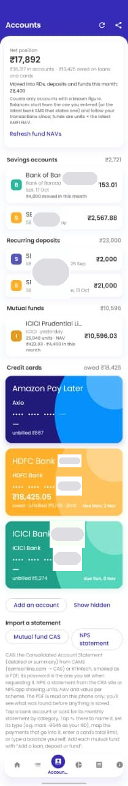
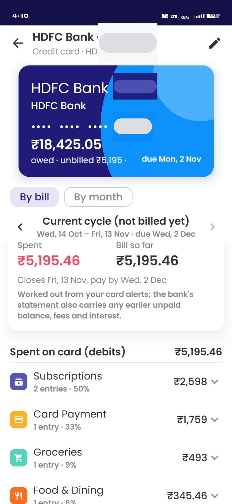
Accounts appear as their alerts arrive; you can also add any by hand. The screen totals Moved into RDs, deposits and funds this month and shows the Net position.
Bank accounts, cards and wallets show a Balance today that starts from the latest SMS balance ("Avl Bal") or the figure you typed, and then follows every later payment and credit, so it stays current between alerts. When a new alert states a different balance, PaiYo asks: Keep PaiYo's figure or Go back to the SMS balance (a difference usually means a missed or doubled transaction). Tap an account to name it, set its type (Savings, RD, FD, Loan, Credit card, Fund, NPS, Equity…), type a balance (used until a newer SMS has one), or hide it.
Credit cards are drawn as card faces. Enter the card's total credit limit to see the amount owed (limit − limit left in the latest card SMS), plus owed · unbilled · limit and the due date. Set the billing cycle (bill date and payment due day) and tap the card for its statement: By bill (each cycle with spent, refunds, paid and left to pay; the current cycle not yet billed) or By month. It's worked out from your card alerts; the bank's statement also carries any earlier unpaid balance, fees and interest.
Add an account — for things with no SMS balance: a car or home loan (enter the outstanding from your statement, link its EMI category to see what you've paid since), an FD, an RD, stocks (a typed value), a mutual fund or NPS.
- Mutual fund: tap it, search the scheme (from AMFI's daily NAV list; pick the exact plan, Direct/Regular, Growth/IDCW) and enter the units you hold. Value = units × latest NAV, refreshed on open and at each sync. Mapped SIP payments after today add units at that day's NAV.
- NPS: add each scheme (e.g. "SBI central govt", from npsnav.in's list) and its units. Salary deductions don't show in bank SMS, so update units from your statement now and then.
- RD/FD opened by SMS: when the bank's "RD A/c … has been opened" alert arrives, PaiYo adds the deposit itself and tells you ("New recurring deposit added").
Import a statement — Mutual fund CAS (the Consolidated Account Statement from CAMS or KFintech, detailed or the one-row-per-folio summary, emailed as a password-protected PDF) or NPS statement (the CRA transaction statement; password is often your PRAN or date of birth). PaiYo shows every holding found (units, NAV, value, cost, folio) before importing; each scheme becomes or updates an account. Re-import a newer statement any time to correct units. Files over 20 MB or 200 pages are refused; if a PDF can't be read, the first lines it saw are shown so you can report it. Demat CAS (NSDL/CDSL) isn't supported.
Money going into this account — on an RD, FD, fund or loan, tap Add payments that go into it and pick the payee from your savings-account payments (suggested ones first). Choose Only payments of ₹X when the same name is paid for different things, or Every payment, any amount. The account then shows what moved in this month and in all, and you can tick Don't count them as spending (they become Self Transfer and budgets leave them out).
Budget
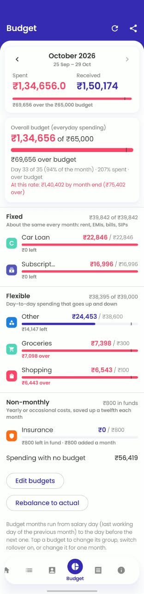
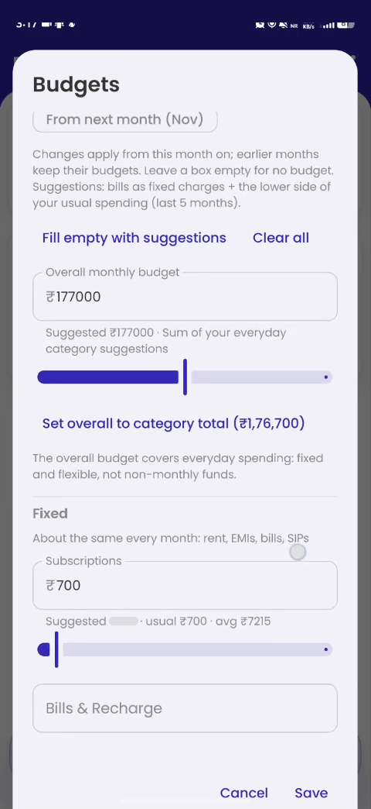
Monthly limits per category, with an overall budget for everyday spending. A By head card adds the category budgets up under their heads (Food, Beverages and Groceries; Utility & Bills; Travel & Transport; Lifestyle; …) and shows spending against each.
- Budget month runs from salary day to the day before the next one (the last working day of the previous month, skipping weekends and Delhi gazetted holidays; March pay comes in April). A real credit tagged Salary within 6 days of the expected day starts the month instead. Switch to calendar months under Settings → Budget month.
- Set up budgets / Edit budgets: Fill empty with suggestions pre-fills from your bills as fixed charges plus the lower side of your usual spending over recent months. Leave a box empty for no budget. Choose From this month or From next month (next month's changes are listed on the Budget screen with a View link). Clear all empties every box. Set overall to category total sums your everyday suggestions.
- Groups: every budget is Fixed (rent, EMIs, SIPs), Flexible (day-to-day) or Non-monthly (insurance, school fees: entered as a yearly amount; a twelfth goes into a fund each month and payments come out of it, so one big premium doesn't wreck a month). The overall budget covers fixed + flexible only. Tap a budget to change its group.
- Progress: spent / budget with a bar (amber at 80%, red at 100%), a tick showing how far through the month you are, Day 14 of 31 · 60% spent · running fast/slow, and from day 5 At this rate: ₹X by month end. Spending with no budget and Bills still to pay this month are listed too.
- Roll over (tap a budget): money left at month end adds to the next; overspending takes away. Non-monthly funds always roll over.
- For this month only / From this month on: change one budget for one month, or from now on (earlier months keep theirs).
- Rebalance to actual: sets every fixed and flexible budget of the month on screen to what was actually spent, so nothing shows over or under and nothing rolls over from that month. Undo this month's changes reverses it.
- Alerts: a notification at 80% and again at 100% of a budget, once each per month, the moment the alert arrives (Settings → Budget alerts).
Bills
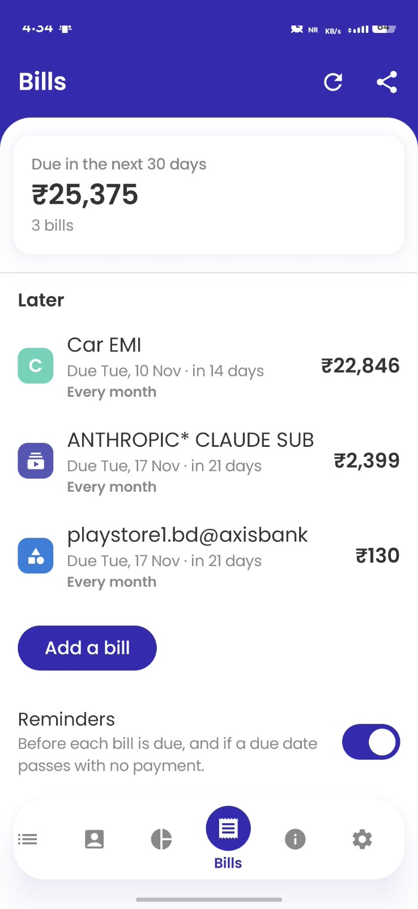
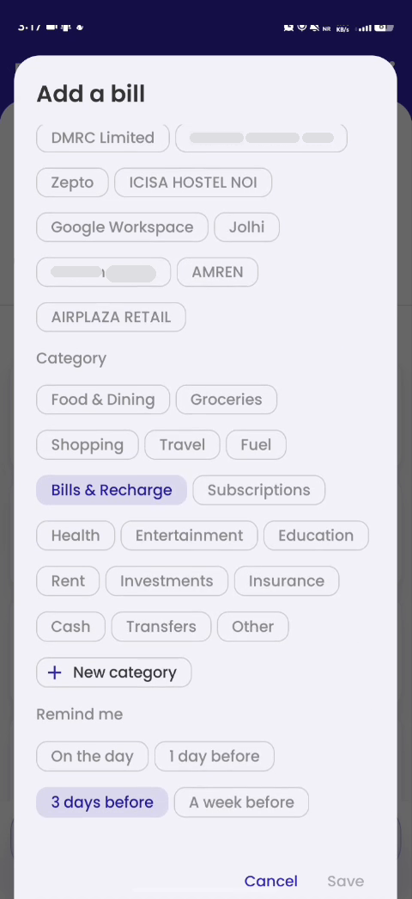
Recurring bills and subscriptions: rent, EMIs, phone, electricity, school fees, the maid.
- Add a bill: name, amount (or Amount changes each time, for electricity or a card statement), category, how often (monthly, 3-monthly, 6-monthly, yearly), next due date, and Remind me (on the day, or 1/3/7 days before). Link it to a merchant from your recent payments and PaiYo ticks it off when that payment's alert arrives within about 12 days of the due date (20 for rarer bills). Leave it unlinked for cash payments and tap Mark paid yourself.
- Lists: Due in the next week, Due in the next 30 days, then the rest; overdue ones say Was due … days ago. Each shows the last payment. Skip this one for a month you don't pay; a tick-off can be undone.
- Looks recurring (Find payments automatically): merchants you've paid on a schedule (3+ payments about a month apart, or 2 about 3 or 6 months apart, similar amounts). Make this a bill or Not a bill.
- Reminders: a notification before each due date, and one if a due date passes with no payment. Switch at the bottom of the screen.
- The Budget screen shows bills still to pay this budget month; the Excel file and live Sheet have a Bills tab.
Summary
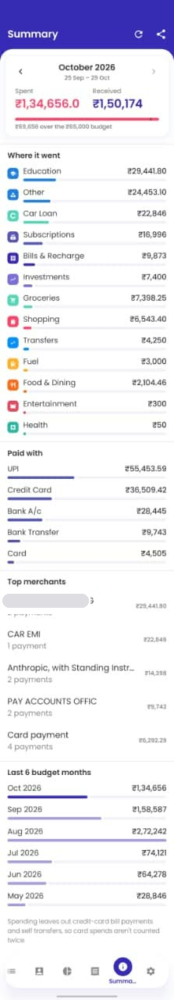
Spending for the month on screen: Where it went by head, tap a head to see its categories, Paid by payment mode, Top merchants (with the number of payments to each), and the last 6 budget months side by side. Spending leaves out card bill payments and self transfers. To see the payments behind a figure, search for the category or merchant on Transactions.
Settings

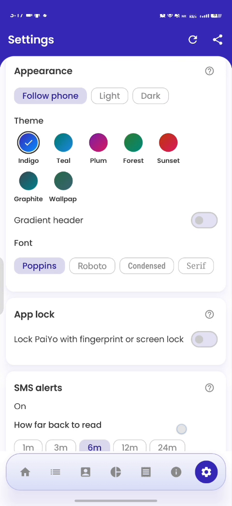
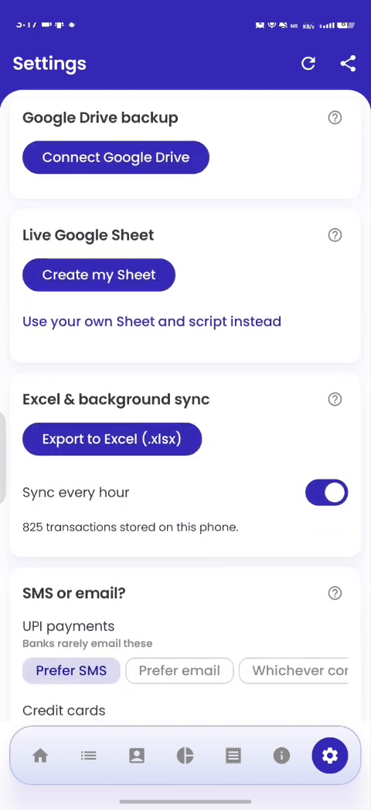
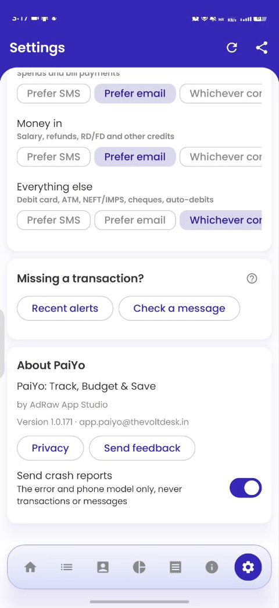
Each section has a small ⓘ that opens a short explanation. In order:
| Section | Controls |
|---|---|
| Budget month | Salary day to salary day or Calendar month; this month's date range (March pay comes in April, so April's month starts then); Budget alerts at 80% and 100%. |
| Your categories | Add (New category), rename (moves its transactions, rules, budget and bills) or delete (its transactions move to Others) your own categories. Built-in categories sit under heads: Food, Beverages and Groceries (Food & Dining, Groceries); Utility & Bills (Bills & Recharge, Subscriptions); Travel & Transport (Travel, Airlines, Cabs and Cab Rentals, Railways and Roadways, Tolls, Hotels, Motels, Resorts, Fuel); Education; Health; Lifestyle (Shopping, Online Shopping, Clothing and Apparel, Durables and Home Goods, Entertainment); To People; and on their own Household help, Repair and Services, Rent, Loans, Insurance, Investments, Trading, Agriculture, Government Services, Cash, Card Payment, Self Transfer, Salary, Refund, Money In, Others. A payment carries the category; Home, Summary and the Budget overview roll categories up to heads. For EMIs, use Loans and name the payee "Car EMI" or "Home Loan EMI". |
| Learn my categories | Fill in categories from what I've taught it switch (off by default). On: a payment the rules would leave in Others gets the learner's guess when it is at least 60% sure, shown with a ? after the category on Transactions; open it and tap Yes, always to confirm (saves a rule) or pick another category. Guess categories for payments in Others does the same for payments already in Others. Guesses never teach the learner; only your own choices do. |
| Appearance | Theme swatches (Indigo, Teal, Plum, Forest, Sunset, Graphite, and Wallpaper / Material You on Android 12+), Gradient header, dark mode (true black; Follow phone), Font (Poppins, Roboto, Condensed, Serif). |
| App lock | Fingerprint, face or screen lock when PaiYo opens and after a minute in the background; screens hidden in recent apps and screenshots. Needs a screen lock set on the phone. |
| SMS alerts | Allow SMS access (first explains what's read, then Allow / Not now), how far back to read, Rescan SMS / Rescan SMS and email (already-stored alerts are skipped, nothing doubles). |
| UPI app notifications | Read payments from UPI apps switch (turning it on first shows Let PaiYo read UPI app notifications?; Allow switches it on and opens Android's Notification access screen, Not now leaves it off), Allow notification access (same), Count app payments against (a savings account, or No account), the list of apps read. Tester build only for now. |
| Gmail alerts | Sign in with Google (first shows Let PaiYo read bank emails in Gmail?, then Google's screen; read-only Gmail, only mail from bank senders, no password stored), Reconnect; Advanced: use an app password instead (Gmail address + 16-character app password, stored encrypted); Extra alert senders (domains or addresses of banks PaiYo doesn't know). |
| Google Drive backup | Connect Google Drive, Set / Change backup passphrase (backups are encrypted with it), Back up now, Back up every day, last backup time, Restore… (replaces everything in the app; asks for the passphrase; old unencrypted backups restore with it left empty), Disconnect. The newest 14 backups are kept. |
| Live Google Sheet | Create my Sheet (a "PaiYo" spreadsheet in your Drive, kept up to date at each sync), Open Sheet, Sync now, Stop (the Sheet stays in Drive). |
| Excel & background sync | Export to Excel (.xlsx); Sync every hour (reads new Gmail and updates the Sheet in the background; SMS are read as they arrive either way); the number of transactions stored. |
| SMS or email? | For each kind of payment (UPI, credit card, money in, everything else): Prefer SMS, Prefer email or Whichever comes first. See section 4. |
| Missing a transaction? | Recent alerts: every bank SMS and email read lately, newest first, with what happened to it (added, already there, a copy of another, or why it was skipped); filter by amount or account digits; Report this format shares a missed alert with account numbers, references, phones and UPI IDs blanked (and hide names too), after a preview. Check a message: paste an alert to see how it's read and Add it if it's missing. |
| About PaiYo | Name, publisher, version and build, contact email, Privacy text, Send feedback (opens a pre-filled email with a template and a details footer: version, Android, phone model, last screens, a random report ID), Send crash reports (on by default; the error and phone model only). |
4. How PaiYo reads your alerts
Which SMS count. Only alerts from known bank and card headers (SBI, SBI Card, HDFC, ICICI, Axis, Kotak, Yes, IndusInd, IDFC FIRST, Federal, RBL, AU, PNB, BoB, BoI, Canara, Union, Central, IOB, Standard Chartered, HSBC, Amex, OneCard, Paytm, Jupiter, Fi, Axio Pay Later, and the RBI *.bank.in headers) that mention an amount. SMS from phone numbers, shops and apps (Swiggy, Amazon order SMS) are ignored. A header PaiYo doesn't know that names a masked account is held under New sender until you say whether to count it.
What's skipped. OTPs, autopay/mandate notices ("will be debited"), statements and due-date reminders, failed transactions, promotional SMS, and amounts over ₹10 crore. Refunds of failed payments are recorded as Refund.
UPI apps. GPay, PhonePe and Paytm don't send their own payment SMS; your bank does (e.g. SBIUPI), and that's what PaiYo records, with the payee from the alert. A RuPay credit card used on UPI counts as a card.
UPI app notifications (Settings → UPI app notifications). A payment made inside Google Pay, PhonePe, Paytm, BHIM, MobiKwik, CRED or Amazon Pay to a saved contact, or money received straight into the app, often produces no bank SMS or email. Switch Read payments from UPI apps on: PaiYo first explains what it reads (Let PaiYo read UPI app notifications?); tap Allow and Android opens its Notification access screen, where you turn PaiYo on. PaiYo then reads those apps' own notifications ("You paid ₹3,570 to Pramod Kumar Yadav", "₹500 received from Rahul") and records the payment as UPI, paid from the account you choose under Count app payments against (or none). Failed payments, requests and offers are skipped. When the bank's SMS for the same payment arrives too, the two are counted once. Notifications from any other app are ignored at the door and never read, stored or logged. These transactions show the app's name on the Transactions list.
Money out or in is read from one dictionary of bank words (debited, Dr, Dbt, WDL, ATW, NACH/ECS debit, नामे; credited, Cr, Cdt, received, refund, जमा…). Short forms count only next to an amount or account ("Rs 2 Cr" is crore).
Categories come from merchant rules (Swiggy → Food & Dining, IRCTC → Railways and Roadways, FASTag → Tolls…), for payees with no brand from words in the name (store, academy, motors…), and for QR-sticker payees under ₹500 (the vegetable vendor) Groceries. What's left is Others, unless Settings → Learn my categories is on: then the learner, trained on your own corrections (payee words, person / shop / QR, amount range, round or odd, weekday, payment mode), fills in a guess when it is at least 60% sure, marked ? until you confirm it. Correct one with Apply to all and PaiYo follows your rule for past and future alerts from that merchant.
One payment, two alerts. The same payment reported by SMS and by email (or by a UPI SMS plus an account SMS) is stored once: matched on the UPI reference, or same amount + account within 20 minutes from a different sender, or up to 3 hours apart when the amount has paise, the names match, or they came within 20 minutes. Longer gaps (up to 3 days) are asked about under Same payment?. The copy from your preferred source supplies the details: by default UPI → SMS, credit cards → email, money in → email, everything else → whichever comes first. The first copy is recorded at once; when the preferred one arrives, the same transaction takes its details, and names, categories and accounts you've set stay.
Transfers between your own accounts. A debit on one account and a credit of the same amount on another, naming the same person, within 30 minutes, are marked Self Transfer on both sides, so moving money into your RD isn't income. Tag the debit side (with "this amount") if you want it in a budget.
Credit-card bills. When you pay a card bill, the bank's debit and the card's "payment received" are tagged Card Payment and left out of spending and income; the individual card purchases are what count. A card that confirms the same payment twice (HDFC sends "received towards your card" on the day and "was credited to your card" a day or two later) is counted once.
Email. With Gmail connected, PaiYo searches only mail from bank senders (SBI, SBI Card, HDFC, ICICI, Axis, Kotak, Amex, OneCard, Paytm, PhonePe, *.bank.in, plus any you add), checks the sender is authenticated (DKIM/SPF/DMARC, so a forged "bank" email is ignored) and reads it on the phone. Paytm and PhonePe receipt emails are read too.
Balances. "Avl Bal" in bank SMS and "Avl Lmt" in card SMS set an account's balance; from then on it follows your transactions (see Accounts).
5. Getting your data out
Excel (share icon, or Settings → Export to Excel): every transaction with a Budget month column, a Budget sheet (budget vs actual by group, carried-in amounts as live formulas, spending per budget month), a month-by-category summary and a Bills sheet. Save it to Downloads or Drive.
Live Google Sheet (Settings → Live Google Sheet → Create my Sheet): a spreadsheet called PaiYo in your Drive with Transactions, Summary (spending per budget month and category × month), Budget (this budget month by group, with rollover and funds) and Bills (next due, status, last payment), rewritten from the app at each sync. The Sheet mirrors the app: edit in PaiYo; edits in the Sheet are overwritten. PaiYo uses Google's drive.file permission, so it can open only files it created. Alert text is written as plain values, so a merchant name can never become a formula. Stop ends the updates and leaves the Sheet in Drive.
Google Drive backup (Settings → Google Drive backup): the whole database (transactions, edits and rules, budgets, bills) plus settings, as a small zip encrypted with a passphrase you choose (AES-256). A lost passphrase means a lost backup; PaiYo can't recover it. Daily backups run when online and the battery isn't low; the newest 14 are kept in PaiYo backups. Restoring replaces what's in the app, then the next sync reads SMS and email after the backup date again (duplicates are skipped). A Gmail app password isn't backed up; enter it again after a restore.
6. Privacy and security
- Asked, not assumed. Before Android's SMS prompt, Android's Notification access screen and Google's Gmail screen, PaiYo shows what it will read and why; nothing is read until you tap Allow, and Not now leaves the feature off.
- On the phone only. No PaiYo server or account. Gmail, Drive and the Sheet are your own Google services, used only if you switch them on, with the narrowest permissions (
gmail.readonly;drive.file, files PaiYo creates). - UPI app notifications (off unless you switch it on). Android's Notification access could show PaiYo every notification; PaiYo reads only those from the UPI apps listed in Settings and discards everything else unread. The notification text is kept 30 days like an SMS, then deleted.
- SMS. Only bank and business alerts with an amount are kept; personal SMS are never stored and OTP text is never stored. The alert text itself is deleted after 30 days; the transaction stays.
- Encrypted database. The database is encrypted (SQLCipher) with a key held in the phone's Android Keystore. App lock adds your fingerprint or screen lock and hides PaiYo's screens from recent apps and screenshots.
- Encrypted backups with your passphrase; HTTPS only for every connection; release builds keep no logs.
- Forged alerts. Emails must pass DKIM/SPF/DMARC; unknown SMS senders are held until you allow them; absurd amounts are rejected.
- Crash reports (optional, on by default): the error and phone model, never transactions or messages. A random report ID in About lets you quote a crash in feedback.
- Reporting a format blanks account numbers, references, phones, UPI IDs and (optionally) names before anything is shared, and shows you the text first.
allowBackupis off, so nothing goes into Google's Android backup. Uninstalling removes all stored data; your Sheet, Excel files and Drive backups are yours to keep or delete.
Full details: the privacy policy.
7. FAQs
A payment didn't show up. Settings → Missing a transaction? → Recent alerts says what happened to each alert (skipped and why, already there, a copy of another). If the alert isn't listed, tap Rescan SMS and email. If it's listed as Not read as a payment, tap Report this format: the blanked text reaches the developer and the format is added. For a new bank header, answer the New sender card on Transactions.
A category has a question mark. It is the learner's guess (Settings → Learn my categories is on). Open the payment: Yes, always confirms it and saves a rule for that payee; choosing another category corrects it. Either way the ? goes.
Where did Transfers / Services / Other go? They were renamed on 30 Oct: To People, Repair and Services and Others. Your payments, rules, bills and budgets moved with them, and a category you had added with the same name as a new built-in one (Loans, Tolls, Airlines…) was folded into it.
It counted my own transfer as spending / income. Transfers between your accounts within 30 minutes are marked Self Transfer automatically. For others, open the transaction, set the category to Self Transfer (or Transfers) and apply it to this amount for that name.
My salary isn't recognised, so the budget month is wrong. Tap the salary credit, set its category to Salary, tick Apply to all. The budget month then starts on the real credit date.
The same payment appears twice. Usually an SMS and an email with different names. Answer Same payment? when asked, or open one and tap Not a transaction. Set your preferred source under Settings → SMS or email?.
A credit-card purchase is counted twice. It shouldn't be: card purchases count, and the bill payment is tagged Card Payment and left out. If a bill payment shows as spending, open it and set the category to Card Payment.
The balance on Accounts is wrong. Tap the account and type today's balance from your bank app; PaiYo follows your transactions from there and tells you when a bank SMS disagrees (which usually means a missed or doubled transaction: check Recent alerts).
My loan / FD / mutual fund / NPS isn't there. Banks don't SMS these balances. Add them under Accounts → Add an account, or import a CAS / NPS statement.
How do I budget for yearly things like insurance? Put the budget in the Non-monthly group with its yearly amount; a twelfth is set aside each month and the premium comes out of that fund.
Can I set next month's budget now? Yes: Edit budgets → From next month.
I pay a bill in cash. Add the bill unlinked and tap Mark paid each time.
Nothing updates in the background. Check Settings → Sync every hour is on, and that Android isn't restricting PaiYo's battery use. SMS are read as they arrive regardless.
Can I use Yahoo / Outlook mail? Not yet: email alerts are Gmail-only today. Yahoo and other IMAP mailboxes are planned; Outlook isn't.
Does PaiYo see my Google password or my whole Drive? No. Sign in with Google gives it a short-lived token with read-only Gmail and files it created in Drive. You can revoke access any time from your Google account's security page.
I forgot my backup passphrase. The backup can't be opened; make a new backup with a new passphrase (Change passphrase) while the data is still on the phone.
Why does the launch screen stay indigo when I change the theme? Android draws it before the app starts, so it can't follow the theme.
Screenshots come out black. App lock is on, which hides PaiYo's screens from screenshots and recent apps. Turn it off briefly to take one.
Where do I send feedback or a bug? Settings → About PaiYo → Send feedback (a pre-filled email to app.paiyo@thevoltdesk.in), or email directly. Crashes are reported automatically if Send crash reports is on.
Is my data gone if I uninstall? Yes, unless you have a Drive backup or an exported Excel file. Back up first.